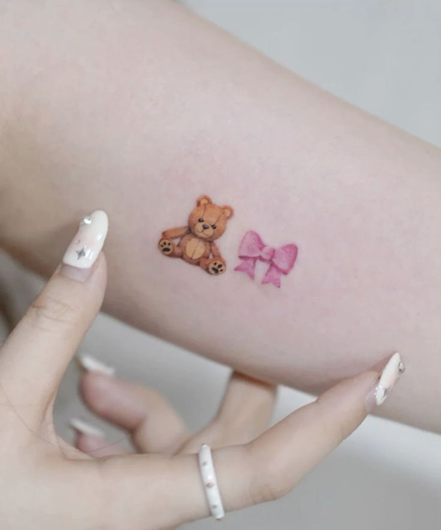
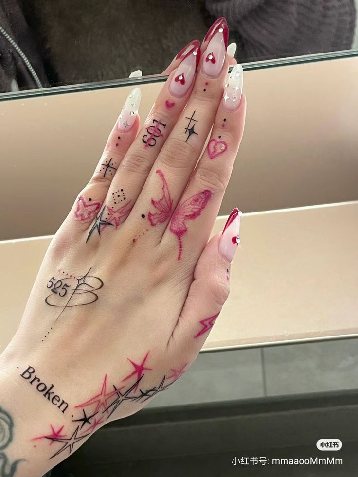
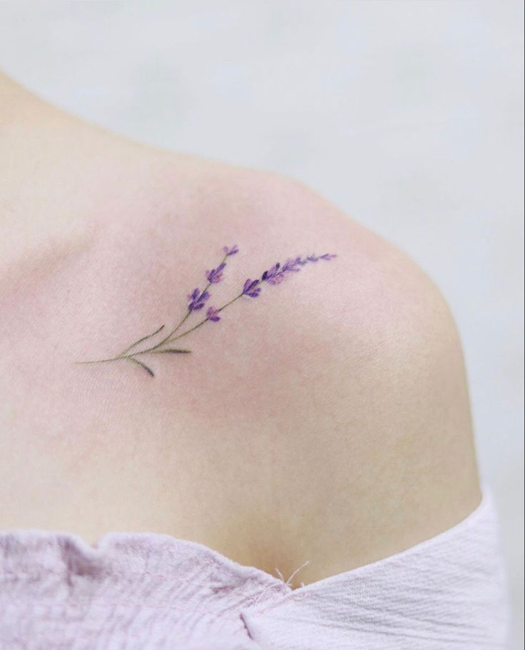
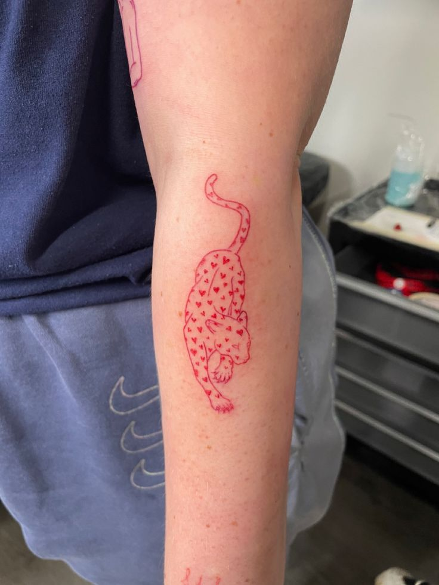
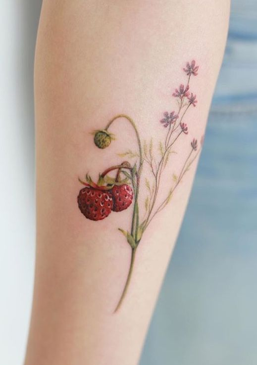

TÁ PENSANDO EM FAZER UMA TATTO? CONFIRA AQUI ALGUNS MODELOS !
A tatuagem dos emojis de laço e urso é uma escolha encantadora e cheia de personalidade, que combina fofura e significado de forma única. O laço, com sua aparência delicada, simboliza carinho, feminilidade e um toque de sofisticação, enquanto o ursinho evoca a ideia de proteção, conforto e um amor incondicional. Juntas, essas figuras criam uma tatuagem que transmite uma mensagem de afeto e ternura, com uma estética jovem e moderna. O contraste entre os dois emojis torna a composição ainda mais interessante, oferecendo uma forma criativa e leve de expressar sentimentos e conexões especiais. Além disso, a simplicidade dos desenhos proporciona um visual clean e encantador, ideal para quem deseja algo discreto, mas com grande significado.
As tatuagens pequenas nas mãos são uma maneira incrível de expressar personalidade de forma sutil e sofisticada. Cada detalhe minucioso se torna uma obra de arte delicada, criando um visual único e cheio de significado. As mãos, como uma tela natural, oferecem um espaço perfeito para essas tatuagens, que, apesar de pequenas, capturam a atenção com sua originalidade. Seja em forma de símbolos, palavras ou desenhos, essas tatuagens podem representar momentos especiais, crenças pessoais ou simplesmente um estilo único. Além disso, o contraste entre a suavidade das tatuagens e a natureza marcante das mãos torna essa escolha ainda mais elegante e cheia de charme. A leveza e a delicadeza dos desenhos criam um efeito visual maravilhoso, tornando as mãos um verdadeiro ponto de destaque.
A tatuagem de lavanda é uma escolha delicada e encantadora, que transmite uma sensação de serenidade e beleza natural. Com suas linhas finas e detalhadas, essa flor simboliza calma, equilíbrio e um toque de elegância sutil. A lavanda, conhecida por suas propriedades calmantes, é uma representação perfeita de paz interior e harmonia, tornando a tatuagem não apenas um adorno visual, mas também um reflexo de um espírito tranquilo. A suavidade das cores e o design fluido fazem com que essa tatuagem seja ao mesmo tempo sofisticada e delicada, criando uma conexão instantânea com a natureza e com a busca por equilíbrio. Com sua estética refinada, a lavanda é uma escolha atemporal e cheia de significado para quem busca transmitir um toque de graça e serenidade.
A tatuagem de uma onça com as manchas em formato de coração é uma obra de arte poderosa e cheia de significado. A onça, com sua imponência e força, simboliza coragem, liberdade e a conexão com a natureza selvagem. Quando suas manchas se transformam em corações, a tatuagem ganha uma beleza única, mesclando a força do animal com a ternura do amor. Esse contraste cria uma imagem intrigante e emocionalmente carregada, onde a delicadeza do coração suaviza a energia feroz da onça, resultando em um design impactante e cheio de personalidade. Essa combinação perfeita de força e amor torna a tatuagem não apenas visualmente impressionante, mas também uma expressão profunda de equilíbrio entre a ousadia e a afeição.
O morango é uma verdadeira celebração da natureza, encantando tanto pelo seu sabor doce e refrescante quanto pela sua aparência vibrante e convidativa. Sua cor vermelha intensa e sua forma delicada transmitem uma sensação de frescor e energia, tornando-o símbolo de prazer e vitalidade. Além disso, o morango é um fruto que carrega consigo um charme natural e uma leveza que o tornam irresistível, tanto na culinária quanto como inspiração para tatuagens e designs. É uma fruta que combina com a simplicidade e a sofisticação, sendo capaz de evocar sentimentos de nostalgia e alegria em cada mordida ou olhar. Ao escolher o morango como tatuagem ou em qualquer outro contexto, é como se estivesse escolhendo um pedaço da essência da natureza, repleto de doçura e beleza.
